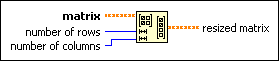

Resize Matrix Function
Owning Palette: Matrix Functions
Requires: Base Development System
Resizes matrix with new row and column dimensions based on the number of rows and columns you specify.
The connector pane displays the default data types for this polymorphic function.

 Add to the block diagram Add to the block diagram |
 Find on the palette Find on the palette |